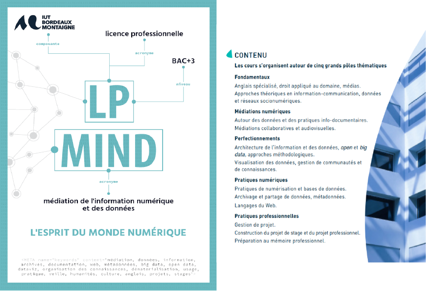
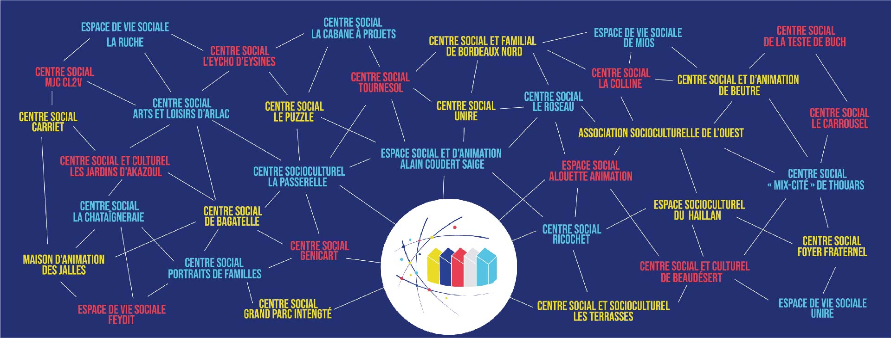

Pendant plus de 20 ans, j'ai arpenté les salles et les couloirs de différents Centres Sociaux et Socioculturels. J'y ai appris un métier (voire plusieurs), j'y ai fait des rencontres déterminantes qui m'ont poussée à évoluer, à me remettre en question, à apprendre. J'y ai porté des projets de plus ou moins grande ampleur, avec plus ou moins d'impact, occupé des postes avec plus ou moins de responsabilités. Dans cet article, je reviens sur ce parcours qui m'a construite professionnellement et dont les étapes m'ont amenée à intégrer la Licence Professionnelle MIND en septembre 2020.

Intégrer la Licence Professionnelle proposée par l'Université Bordeaux Montaigne a modifié mon regard sur les Données et les possibilités offertes par une meilleure maîtrise et compréhension de leurs différents contextes juridiques, professionnels, communicationnels...
Apprendre l'histoire des données et des métadonnées, pouvoir les manipuler, réfléchir à leur archivage, comprendre l'impact de l'Open Data et du Big Data, a transformé ma façon d'appréhender le monde professionnel dans un contexte numérique de plus en plus prégnant. Cet article retrace les apprentissages théoriques et pratiques de l'année de licence qui ont été les plus impactants pour ma pratique et ma réflexion.

Au fur et à mesure de l'avancée des cours de licence professionnelle et de mes acquisitions de connaissances, beaucoup de mes apprentissages faisaient résonance avec mon parcours professionnel. Il me semblait que ces apprentissages pouvaient être complémentaires du travail de médiation que font les Centres Sociaux et de manière encore plus accentuée avec le travail des Fédérations de Centres Sociaux. J'ai donc proposé ma candidature à la Fédération des Centres Sociaux de Gironde qui est en réflexion transversale sur la question du numérique à la fois dans sa pratique interne et dans les structures adhérentes.


.png)